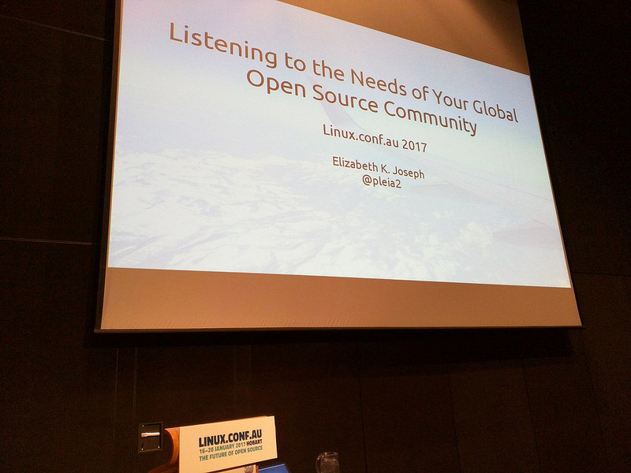
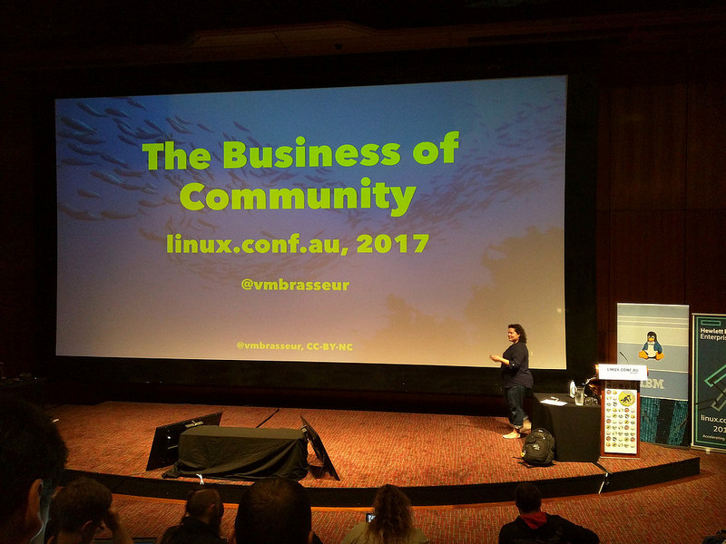

I spend a lot of time participating in community-driven open source conferences, which is how I found myself talking about “Listening to the needs of your global open source community” at Linux.conf.au (LCA)—in Tasmania—just two weeks after joining the DC/OS Open Source team. Slides from that talk are available here and a video of the talk is on YouTube.

LCA talks address cutting-edge open source trends, and this year they focused on the future of open source projects generally, rather than specific technologies. A keynote by Pia Waugh explored the opportunities that we, as open source technologists, have to make real improvements in the world around us. Dan Callahan of Mozilla gave us a framework to plan for project failure, which highlighted open standards, open communication, and the importance of reducing complexity, even in major infrastructure projects.
Many of the individual talks at LCA this year had a strong operations slant, with talks about containers, kernels and firmware, security and more, however, I couldn’t help but notice large number of community-focused talks as well. In addition to the Community Leadership Summit X (CLSx) event I mentioned in my last post, a couple of talks stood out as especially relevant to the work we’re doing at Mesosphere as part of the DC/OS community.
The first was Community Building Beyond the Black Stump presented by Josh Simmons. Drawing from his experience building a large community outside of a large city, Josh advocated for multidisciplinary meetups. In big, tech-heavy cities like San Francisco, communities focused on specific technologies make sense since enough people will be interested in any given topic to draw a crowd. However, in regions with smaller populations Josh noted that forming a group around one single technology isn’t always possible. He walked through some of the strategies he used for hosting events: always having attendees introduce themselves (so it is easy to follow-up with them later), making a safe space for questions of all levels, cross-promoting events with other nearby meetups, and reaching out to local schools, career counselors, and other local organizations to bring real value to their events.
Josh found that multidisciplinary meetups have value in more populated areas as well, which he elaborated on, using his web-focused meetup group as an example. Multidisciplinary meetups bring together people with a diversity of skills; his group includes everyone from UI designers, to developers, to technical writers. They create strong communities, where people improve their careers by networking with other members outside of their area of expertise. They are welcoming; everyone’s diverse expertise mean that no one is ever the “smartest person in the room”. Everyone brings their own strengths.
As I’ve started participating in DC/OS community events, the lessons from this talk have really resonated. While I believe that running DC/OS-focused events is important, I am excited to highlight other topics and technologies that are relevant for our community (fast data, day 2 operations, and container orchestration to name a few). I’m thrilled to say that on Thursday, February 23rd, Jörg Schad, Michael Hausenblas and I will be hosting in a panel on DC/OS, Kubernetes, and OpenStack with a broad focus on container orchestration. This event will take place at the Mesosphere office in San Francisco, and you can also view it online.
The video of Josh’s talk can be found on YouTube.
Another LCA talk that stood out for me was The Business of Community by VM (Vicky) Brasseur. She discussed how companies can support open source projects and communities, whether they are built around, release, or participate in (without controlling) open source projects. Mesosphere participates in all these ways, since it has Apache Mesos developers and committers on staff, and has released open source projects including Marathon and DC/OS.

VM navigated the often complicated path to working with a community, as well as the benefits and costs. At Mesosphere we have a good handle on the benefits of working with a community; we’ve seen them first hand—in the form of word of mouth marketing, recruitment opportunities, and contributions, both of support and R&D. VM had an interesting perspective on costs. She mentioned that they include sponsorships, and helping paid developers feel comfortable contributing in the open, but stressed that they also include being a leader in the community by providing guidance and mentoring.
VM’s perspective on how to succeed in working with a community was the most valuable part of her talk for me. She stressed communicating codified goals and success criteria. The question of how an open source team at a company can be most valuable to everyone, from the internal product team to marketing and the community, has a never-ending answer that we always need to be listening to and adjusting for.
VM’s talk concluded with common pitfalls working with communities: lack of preparation, tracking uninformative metrics, lack of a community-specific strategy, and mismatched company and community expectations. She also shared an excellent collection of resources that I’m making my way through, and have shared with the team. A video of VM’s talk, along with her slides, are available here.
With all of this in mind, I’d be thrilled to hear from members of the DC/OS community about how we are doing and where we can improve! If you’d like to discuss the resources or talks I mentioned here, or have other aspects of LCA, please start a thread in the #events DC/OS slack channel and at mention me, ejoseph.mesosphere. I’m also available at ejoseph@dcos.io, and on Twitter as @pleia2. If you’re interested in reading more of my thoughts on LCA 2017, I also discuss other aspects of the conference on my personal blog, Highlights from LCA 2017 in Hobart.
The next big open source conference I’m participating in is the Southern California Linux Expo (SCALE15x) in Pasadena, California. I will be running an Open Source Infrastructure Day on March 2nd and then giving my Listening to the Needs of Your Global Open Source Community talk on Saturday the 4th during the main SCALE15x conference. Hope to see you there!